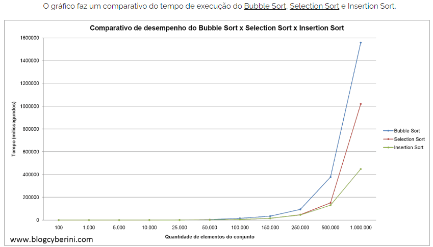
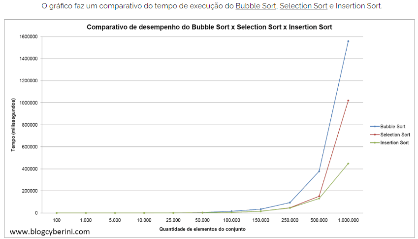
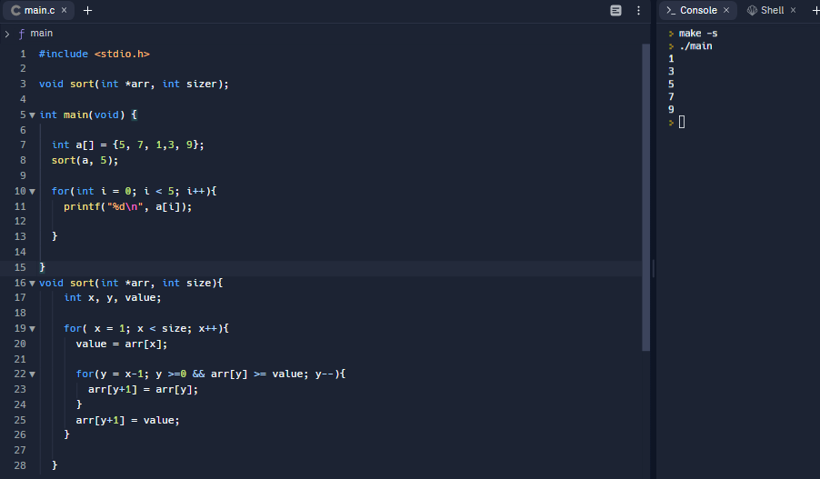

| Representação Gráfica | Animação | Vídeo |
|  |  |
Aluno(s): Cleverton Andrade, Flávio Raposo, João Pedro Marinho, José Adeilton, Renan Leite
Funcionamento:
É um método de ordenação que inicia dividindo o vetor em duas partições: uma ordenada à esquerda e outra não ordenada à direita. Inicialmente, a partição esquerda só terá um elemento (é o caso trivial da ordenação).
De modo simplificado, o insertion sort varre a lista repetidamente e, a cada vez, insere um item da sequência desordenada na posição correta.
| Representação Gráfica | Animação | Vídeo |
|  | |
Vantagens:
Desvantagens:
Implementação:
Referências: